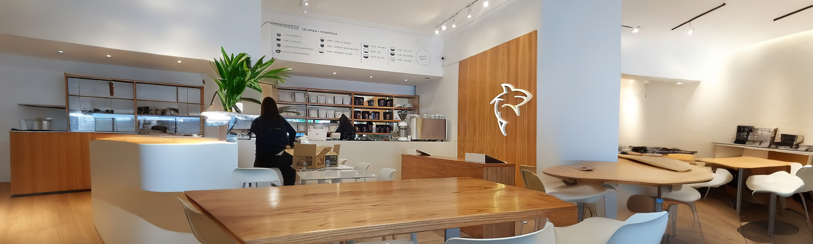

White Shark Coffee, el Café que Combina Trabajo y Espresso
8 Nov de 2023

Hoy quiero compartirles mi increíble experiencia en White Shark Coffee (@whitesharkcoffee), una cafetería de especialidad que abrió hace no mucho tiempo, ubicada en la esquina de Avenida Colón y Perú, en el centro mendocino. White Shark no solo es un lugar para disfrutar de un buen café, sino que también ofrece un ambiente ideal para el trabajo o estudio, con música suave de fondo y diseñado con aislación de sonido exterior, lo que hace que por más que te encuentres en pleno centro, sea de igual forma un lugar ideal para concentrarte.
"Los sentidos de un tiburón son agudos y refinados, al igual que los sabores sutiles y complejos de nuestro café de especialidad "
White Shark Coffee via Instagram
Hablemos de la carta: Es amplia y variada, con opciones que van desde productos salados y dulces, panadería y pastelería, ensaladas, wraps y sándwiches, hasta tragos y cerveza. White Shark es una excelente opción para cualquier momento del día: ya sea para desayunar y merendar o para almorzar y cenar. Podes disfrutar de sus servicios de lunes a viernes desde 7:30hs a 21:00hs; los fines de semana abren de 9 a 21. El menú incluye varias opciones sin TACC y tiene una excelente relación calidad-precio. Lo más destacado de su menú son los cafés de especialidad; tienen café de origen colombiano y nicaragüense; El café colombiano es dulce, con notas de nuez y canela, mientras que el nicaragüense posee matices de chocolate y pomelo. Ofrecen opciones filtradas y para llevar, preparadas en diversas técnicas. También, es uno de los pocos lugares que ofrece el doppio espresso en su carta, esta diversidad es un punto a favor.
Si querés sentirte parte del lugar, podés optar por comprar su merchandising que incluye gorras, remeras, buzos, vasos, etc. Además, un muy buen dato es que podes comprar un vaso reutilizable White Shark y obtener un 20% de descuento en tus próximos cafés. Los fines de semana son especiales, ya que si pedís un café, podés rellenar tu taza, te ofrecen un "refill" gratis para que sigas disfrutando del café de especialidad.
En mí visita pedí una promoción que incluye: una bebida, un sándwich a elección y un café expresso. Elegí un sándwich de jamón crudo, de palta y huevo, con una limonada y un capuchino italiano, súper recomendado. Los sándwiches son generosos y perfectos para compartir.
Lo mejor, es que todas las mesas están equipadas con enchufes y soportes para colocar laptops para poder trabajar cómodamente, acceso a Wi-Fi de buena calidad y servicio de fotocopiadora e impresora, lo que lo convierte en un espacio de coworking práctico. White Shark es un lugar donde el buen café y la productividad se encuentran en un match perfecto. ¡Definitivamente lo recomendaría a todo aquel que busque una opción sofisticada y práctica para un día de trabajo o estudio!